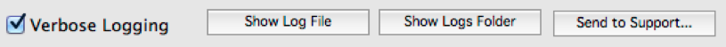

MoneyWorks Manual
Advanced settings
These change some aspects of server operation. You should not change them arbitrarily.
Server startup timeout seconds
The time in seconds allowed for opening a document. If opening takes longer than this it will be considered an error and reported as such to the user logging in. Default is 30 seconds. Only make this higher if your document(s) are very large and your server is very slow.
Idle time before close: seconds
This is the time to wait after the last client logs out of a document before the document should be closed (and possibly backed-up). Default is 60 seconds. If all clients log out, and then somebody logs in again within this time, then the document will not need to be reopened, and rollback will still be possible.
REST API users take note: If you will be using the REST API with your server and you will be making frequent REST requests (e.g. every minute or two) then you SHOULD change this setting to something longer, otherwise your document may be constantly opening and closing for every REST request which may put a very high load on your server and cause problems if a request needs to be serviced while the document close and backup is happening.
Login grace time: seconds
Don't change this except under the direction of technical support. Default is 30.
Disconnect idle clients after: minutes
Defines how long the server should let a client remain idle before forcibly disconnecting them. A client is considered to be idle if the network connection is good but they make no requests of the database. Default is 120 minutes—should be long enough for a long lunch.
Close stale connections after: minutes
Defines how long we should let a stale client retain their connection before forcibly disconnecting them. A client can be stale if either they crash (in which case we want a short threshold) or if their network connection goes down (or maybe the lid of the laptop the client is running on is closed and the laptop sleeps before MoneyWorks Gold can automatically disconnect). Default is 5 minutes.
Don't back up again within: hours
When the server is set to auto-backup documents on close, and this setting is 0, then a backup will be made every time the document closes. If you have automated processes accessing the server which may cause the document to be opened and closed many times a day, then you should set this to something higher (say 4 hours) so that the document does not needlessly get backed up multiple times per day.
Verbose Logging
Logging Verbosity. Default is off.
Moneyworks Datacentre writes diagnostics to its own log file. On macOS, diagnostics are also written to the system log. Further diagnostics may also be written to log files named after MoneyWorks documents that you open.
The Verbose logging option will cause Datacentre to write many more diagnostics (rather than just errors) to the logs. This can put more load on the server, so should not be used unless you need it.
Log file locations
Mac:
/Library/MoneyWorks/Library/Logs/moneyworks_datacentre.log /Library/MoneyWorks/Library/Logs/document.log
Windows:
C:\Documents and Settings\All Users\Application Data\Cognito\
MoneyWorks Datacentre\moneyworks_datacentre.log
C:\Documents and Settings\All Users\Application Data\Cognito\
MoneyWorks Datacentre\Logs\document.log
Use the Show Log File and Show Logs Folder buttons in the Advanced tab of the console to easily display log files. If you need to send log files to Cognito Support for troubleshooting purposes, you can use the Send to Support... button.

Important: You should leave this option off unless you are experiencing problems with the service. Verbose logging can significantly degrade performance. Additionally, logged information may include passwords passed in REST requests.